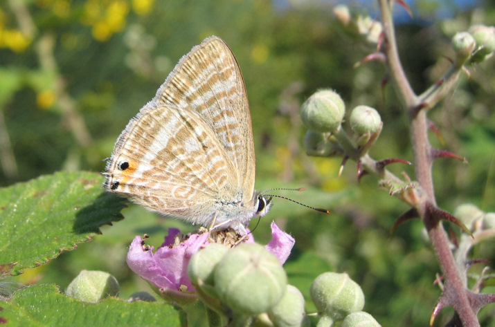
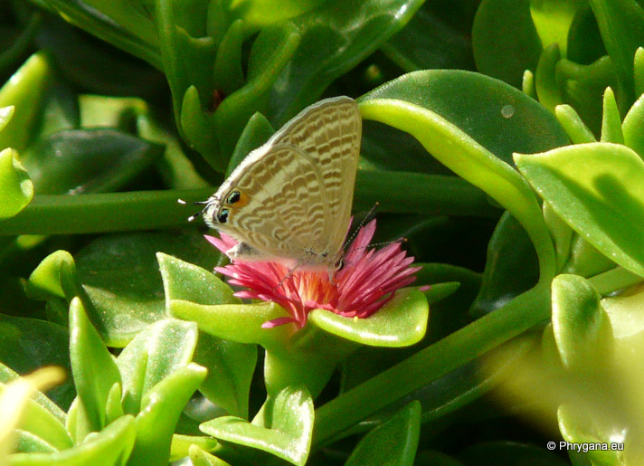

| PHRYGANA | Fauna | Flora | Galles | liste des espèces |
contact -
info - commentaires phrygana1 (at) gmail.com |
| Particularités crétoises | nouveautés | Mines | ressources naturelles |
| Lampides boeticus (Linnaeus 1767) |
| 44 | Fauna | LYCAENIDAE | Polyommatinae | Lampides Hübner 1819 |
|
 Lampides boeticus Frati 08 juin 2005 |
| fr: l'Azuré porte-queue en: Long-tailed Blue de: Großer Wanderbläuling nl: Tijgerblauwtje |
| Adulte: envergure de 28 à 36 mm. Couleur de fond du mâle sur le dessus bleu violet, bordé de brun. La femelle est brun sombre. Le dessous (pour les deux sexes) est brun pâle gris, veiné de blanc, avec une bande submarginale blanche. Il y a un point noir près de l'angle anal et un autre un peu au dessus le long de la marge. |
| Chenille trouvée entre fin mai et novembre. Coloration variable du vert au brun. Oeufs hémisphériques déposés isolément sur les tiges et les feuilles de la plante-hôte. L'incubation dure quelque 6 - 7 jours. La chrysalidation se fait sans cocon, dans la litière. |
| La chenille est oligophage: diverses Fabaceae dont Medicago sp., Lathyrus sp. |
| Espèce plurivoltine (2 à 3 générations): période de vol en mars avril mai juin juillet août septembre octobre |
| Statut en Crète: indigène |
| Biotopes en Crète: phrygana, pelouses sèches, bords des chemins, vieilles olivaies, talus arides, steppes. |
| Altitudes: 0 - 1000 (- 1500) m. |
| Distribution: Europe centrale et méridionale, Moyen-Orient, Afrique, Australie, Asie centrale |
| Note: la chenille peut être cannibale. Mâles territoriaux. |
|
 Lampides boeticus Melambes (Agios Giorgos) 28 septembre 2010 |
| 22 décembre 2012 |
| © paul fontaine -- © Phrygana.eu 2007 -- 2013 |